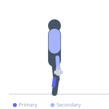
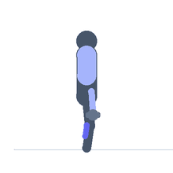

Exercise guide / Farmer's Walk on Toes — Calf and Grip
Farmer's Walk on Toes — Calf and Grip
A farmer's carry variation performed on the balls of the feet (tiptoe), combining loaded carry with continuous calf raise demands. Walking with heavy weights while staying elevated on the toes dramatically increases the sustained contraction demand on the gastrocnemius and soleus, while also loading the forearms and core. This exercise builds functional calf endurance, ankle stability, and grip strength simultaneously.
Primary muscles
gastrocnemius medial
gastrocnemius lateral
Secondary muscles
soleus
flexor carpi radialis
trapezius upper
Stabilizers
transverse abdominis
erector spinae
Equipment
Dumbbell (Fixed)
Optional
Kettlebell


Starting position
- Stand with a dumbbell or kettlebell in each hand at your sides. Rise onto the balls of both feet, maintaining the elevated position throughout the exercise.
Setup
- Choose a weight that allows you to maintain tiptoe position for the full distance. Clear a straight path of at least 10-15 meters.
Steps
- Step 1: Pick up the implements and rise onto the balls of the feet, maintaining a tall posture.
- Step 2: Walk forward in controlled steps while remaining elevated on the toes.
- Step 3: Keep the shoulders packed, core braced, and gaze forward throughout.
- Step 4: Walk the prescribed distance, set the weights down safely, and rest before repeating.
Coaching cues
- Stay up on the balls of the feet — heels never touch the floor
- Pack the shoulders — do not let them rise toward the ears
- Brace the core as if bracing for a punch
Breathing
- Breathe rhythmically throughout. Do not hold your breath during the carry.
Range of motion
- Maintain maximum plantarflexion (full tiptoe) throughout the entire distance.
Tempo
- Walk at a controlled pace — approximately 1 step per second
Common mistakes
- Heel striking during the walk — heels must stay elevated the entire distance
- Leaning forward excessively with the torso
- Using too heavy a weight that forces heel contact
Safety
- Reduce weight or distance if ankle stability is compromised
- Avoid on slippery surfaces
- Consult a physiotherapist if used for Achilles tendinopathy rehabilitation — load must be appropriate
Training
- endurance: 1–4 reps
- endurance: 2–4 sets
- Rest: {'endurance': 60}